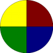

gamescopycat
|  | Repeat after the computer. Longer and longer patterns of lights and sounds will test your short term memory. Choose more color slices to make the game more difficult. |
{kind=link}
#CopyCat - A follow along memory game
# 2013-01-07 j.m.reneau
# requires BASIC256 0.9.9.25 or later
pies = 5
dim lightcolors(1)
lightcolors = {red, blue, green, yellow, purple, cyan, orange}
dim darkcolors(1)
darkcolors = {darkred, darkblue, darkgreen, darkyellow, darkpurple, darkcyan, darkorange}
global pies, lightcolors, darkcolors
fastgraphics
dim game(100)
print "CopyCat"
print "See how long of a pattern you can remember. Click on the correct pie wedge when it is your turn."
do
input "How many pie slices (3-7)?", pies
until pies >=3 and pies <= 7
# generate the game
for t = 0 to game[?]-1
game[t] = int(rand*pies)
next t
round = 0
gameon = true
while gameon
# show the pattern
round++
print "Round " + round
for t = 0 to round -1
call showslice(100,300,game[t])
next t
#
# get the user to give it back
print " Play it back."
for t = 0 to round -1
g = getclick(3000,game[t])
if g = -1 then
# made a mistake - die
gameon = false
t = round
end if
next t
end while
print "You completed " + round + " rounds."
end
subroutine showslice(waittime, soundtime, slice)
pause waittime/1000
call drawgame(slice)
call playsound(slice, soundtime)
call drawgame(-1)
end subroutine
function getclick(timeout, slicetoclick)
# get the click before the timeout
start = msec
while msec<start+timeout and mouseb = 0
pause .01
end while
if msec>=start+timeout then
call drawgame(slicetoclick)
call playdie()
return -1
else
slice = -1
for t = 0 to pies-1
if pixel(mousex, mousey) = darkcolors[t] then slice = t
next t
if slice <> slicetoclick then
call drawgame(slicetoclick)
call playdie()
return -1
else
call drawgame(slice)
call playsound(slice, 250)
while mouseb <> 0
pause .01
end while
call drawgame(-1)
return slice
end if
end if
end function
subroutine playdie()
sound 100,500
say "you loose."
end subroutine
subroutine playsound(s, d)
sound 200+s*50,d
end subroutine
subroutine drawgame(sliceon)
# set slice number by passing its number (-1) nothing is on
clg
penwidth 1
w = 2*pi/pies
for t = 0 to pies-1
if t = sliceon then
color black,lightcolors[t]
else
color black,darkcolors[t]
end if
pie 0,0,300,300,t*w,w
next t
refresh
end subroutine
gamescopycat.txt · Last modified: 2013/01/07 20:44 by admin